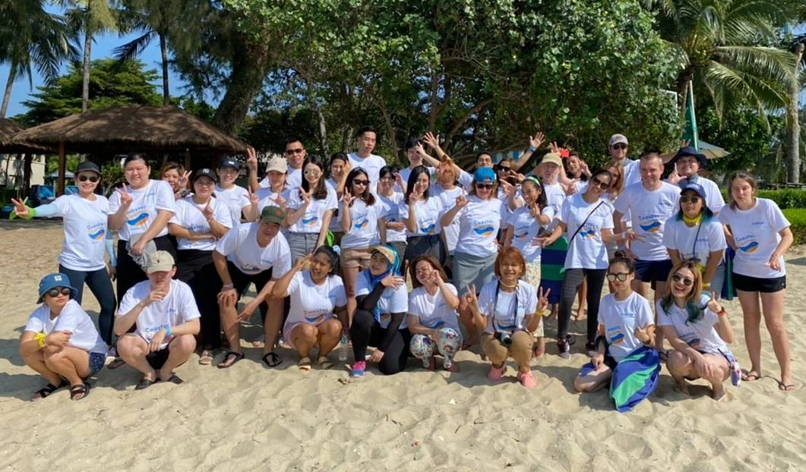
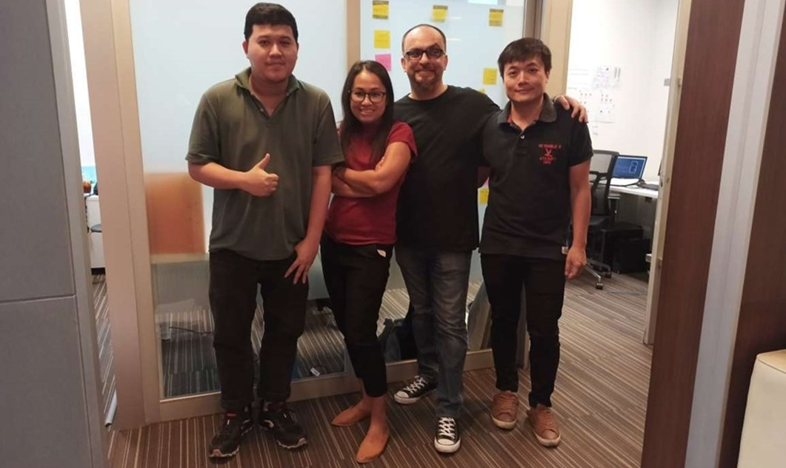
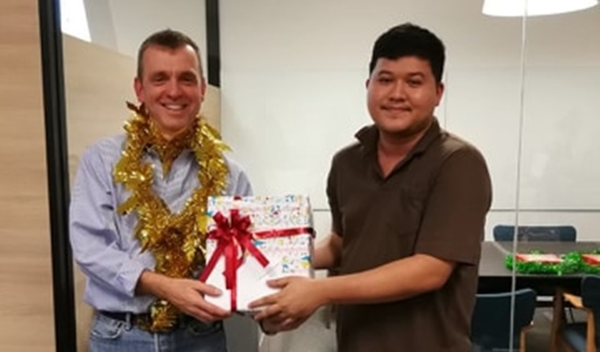
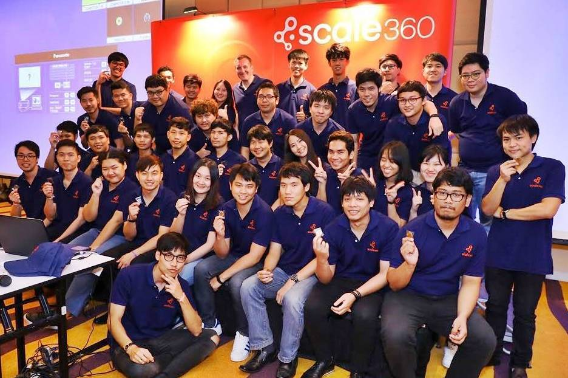
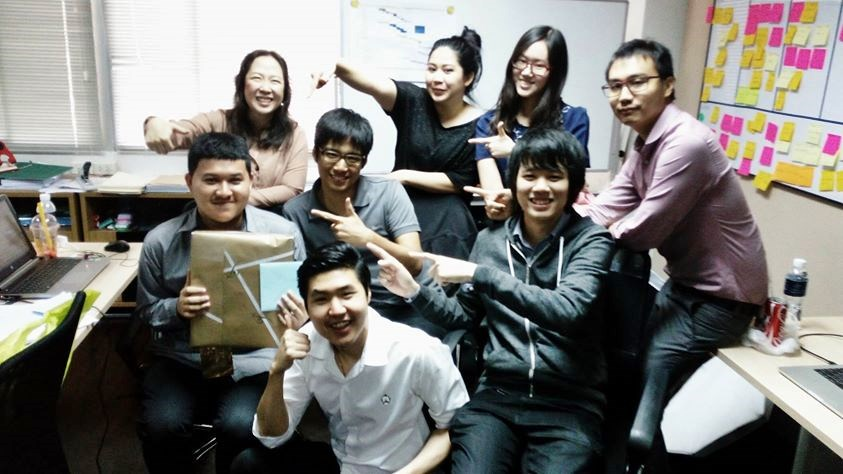
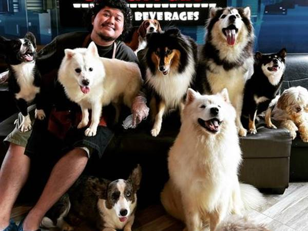

<style>
    /*.track {
        background-color: black !important;
    }*/

    .item {
        border: 0px solid; !important;
        border-style: unset;
    }

    .item-toggle {
        padding-right: 75px !important;
        padding-left: 10px !important;
    }

    .toggle input:checked+.track {
        background-color: black !important;
        border-color: yellow !important;
    }

    .ban_skill {
        background-color: #EDFCFF;
        padding: 10px;
    }
    
    .img_past {
        width : 100%;
        padding-top: 3px;
        padding-left: 35px;
        padding-right: 35px;
    }

    .ionic-slide {
        padding-top: 1px;
        padding-bottom: 1px;
    }

    @media only screen and (max-width: 749px){
        #map_tol {width: 100%; height: 140px; padding: 3px; }
        #map_tol_2 {width: 100%; height: 140px;}
        #img_student, #img_lum {width: 40%; }
        #graph_backend{
            height: 250px;
        }
        #graph_frontend{
            height: 250px;
        }
        #graph_db{
            height: 250px;
        }
        #graph_other_skill{
            height: 250px;
        }
        .story_text {
            padding-left: 7px;
        }
        .img_past {
            padding-left: 20px;
            padding-right: 20px;
        }
    }

    @media only screen and (min-width: 750px) {
        #map_tol {width: 100%; height: 200px; }
        #map_tol_2 {width: 100%; height: 200px; padding-right: 15px; padding-bottom: 20px; padding-top: 10px; }
        #img_student, #img_lum { width: 170px; }
        #graph_backend{
            height: 300px;
        }
        #graph_frontend{
            height: 300px;
        }
        #graph_db{
            height: 300px;
        }
        #graph_other_skill{
            height: 300px;
        }
        .story_text {
            padding-right: 16px;
        }

        #desktop_right_box {
            padding-left: 8px;
            border-top: 3px solid;
            border-left: 3px solid;
            padding-top: 12px;
            padding-left: 20px;
        }

        #top_wrapper_name_to_address {
            padding-bottom: 10px;
        }

        .ionic-slide {
            padding-top: 2px;
            padding-bottom: 2px;
        }
    }

</style>

<!--
    Hello guy, why you Inspect my website? haha It is okay I have many comment.
    I develop this website since 2015
    That time Angular 1 + ionic were very popular that why I use it. (React was not boom that time.)
-->

<ion-view view-title="CV" class="cv_pane">
    <ion-content overflow-scroll="true">
        <div class="rowly" id="header_setting" style="display: flex; flex-direction: row; justify-content: flex-end; align-items: center; padding-right: 5px;">
            <!--  -->
            <ion-toggle id="toggleMode" onChange="toggleColorMode()"  style="height: 45px; width: 10px;" color="primary"></ion-toggle>
            
        </div>
        <div class="rowly">
            <div class="coly-1"></div>
            <div class="coly-10">
                <div class="rowly" id="top_wrapper_name_to_address">
                    <div class="desktop_left_70" >
                        <h2><b><span class="now_rap">Curriculum Vitae</span></b></h2>
                    </div>
                    <div class="desktop_right_30 desktop_center mobile_center" >
                        <!-- <a href=""></a> -->
                        <ion-slide-box does-continue="false" auto-play="true" slide-interval="1000" >
                            <ion-slide>
                                <a href=""></a>
                            </ion-slide>
                            <ion-slide>
                                <a href=""></a>
                            </ion-slide>
                         </ion-slide-box>
                    </div>
                    <div class="desktop_left_70" >
                        <div class="story_text">
                            <br/>
                            <span class="now_rap"><b>First name: </b>Natthakorn&nbsp;&nbsp;</span>
                            <span class="now_rap"><b>Last name: </b>Nakhaseno&nbsp;&nbsp;</span>
                            <span class="now_rap"><b>Nickname: </b>Tron&nbsp;&nbsp;</span>
                            <br/>
                            <span class="now_rap"><b>Birthday: </b>6 Nov 1992&nbsp;&nbsp;</span>
                            <span class="now_rap"><b>Nationality: </b>Thailand </span>
                            <br/>
                            <span class="now_rap"><b>Age: </b>{{tol_age}}&nbsp;&nbsp;</span>
                            <br/><br/>
                            <span class="now_rap"><b>E-mail: </b>tron.natthakorn@engineer.com &nbsp; </span>
                            <span class="now_rap"><b>Mobile: </b>(+66)82-579-3348</span>
                            <br/>
                            <span class="now_rap"><b>GitHub: </b><a href="https://github.com/TronNatthakorn" target="_blank">TronNatthakorn</a> &nbsp;</span>
                            <span class="now_rap"><b>DockerHub: </b><a href="https://hub.docker.com/u/tronnatthakorn" target="_blank">TronNatthakorn</a></span>
                            <br/><br/>
                            <span class="now_rap"><b>Address: </b>Wireless Rd.</span>
                            <span class="now_rap"> Pathumone Bangkok 10330.</span>
                        </div>
                    </div>
                </div>

                <div class="rowly">
                    <div class="desktop_left_50" >
                        <div class="desktop_left_50" id="map_tol">
                            <ng-map id="map_tol_2" center="[13.7332699, 100.5499809]"> <!-- zoom="14" //commend for better perform -->
                                <marker position ="[13.7332699, 100.5499809]" animation="Animation.BOUNCE" centered="true"></marker>
                            </ng-map>
                        </div>

                        <h3><b><span class="now_rap">History Work & Life</span></b></h3>
                            <div class="story_text">

                                <span class="now_rap"><b>July 2021 - Present</b></span><br/>
                                <span>Renovate home. / Stay with family. / Read book. (Docker / React / Etc.) / Relax myself. / Support last company if they contact me for help. <b>(No one contact me about work since December 2021.)</b></span>
                                <br/><br/>
                                <hr/><br/>

                                <span class="now_rap"><b>March 2019 - June 2021</b></span>&nbsp;<span class="now_rap">(2 years 4 months)</span><br/>
                                <b>Roles: </b><span>Full Stack Developer & Android Developer & IT Support.</span><br/>
                                <b>Company: </b><span class="now_rap">Luma Health Insurance.</span><br/>
                                <b>Product: </b>
                                    <span><a target="_blank" href="https://lumahealth.com">Lumahealth.com</a> / 
                                    <a target="_blank" href="https://play.google.com/store/apps/details?id=com.lumahealth.luma">Android App</a> / Many Internal Project Across the Ocean (Vietname / Norway etc.)</span><br/>
                                <b>Work: </b><span>Linux / Shell (Automation Cronjob) / AWS (EC2) / OVH / Cloudflare / Docker / Apache2 / PHP / Laravel / Wordpress / NodeJS / Java (JSP + Android) / MySQL / MongoDB / G-Suite / Admin Portal Office 365 / Support other team about IT and little Infra. (Printer / Windows / VPN / Firewall / ESXi etc.)</span><br/>
                                
                                <ion-slide-box class="ionic-slide" does-continue="true" auto-play="true" slide-interval="2000" >
                                    <ion-slide>
                                        
                                    </ion-slide>
                                    <ion-slide>
                                        
                                    </ion-slide>
                                    <ion-slide>
                                        
                                    </ion-slide>
                                </ion-slide-box>

                                <b>Reason for leaving: </b>
                                <span> Good environment, work, and team.</span>
                                <span> I did not have any problem here. I just felt very tired from hard work and need more time to relax.</span>

                                <br/><br/>
                                <hr/><br/>

                                <span class="now_rap"><b>March 2017 - July 2018</b></span>&nbsp;<span class="now_rap">(1 year 4 months)</span><br/>
                                <b>Roles: </b><span class="now_rap">Mobile & Web Developer.</span><br/>
                                <b>Company: </b><span class="now_rap">Scale360.</span><br/>
                                <b>Work: </b><span>React / React-Native / Redux / Unit & Automation Test & Report (Jest / Mocha / Detox / Cucumber) / JQuery</span><br/>

                                <ion-slide-box class="ionic-slide" does-continue="true" auto-play="true" slide-interval="2000" >
                                    <ion-slide>
                                        
                                    </ion-slide>
                                    <ion-slide>
                                        
                                    </ion-slide>
                                 </ion-slide-box>

                                 <b>Reason for leaving: </b>
                                 <span> Good environment, work, and team.</span>
                                 <span> I did not have any problem here. I just felt very tired from hard work and need more time to relax.</span>
                                 
                                <br/><br/>
                                <hr/><br/>
                                
                                <span class="now_rap"><b>Feb 2016 - May 2016</b></span>&nbsp;<span class="now_rap">(4 months)</span><br/>
                                <b>Roles: </b><span class="now_rap">Laravel Developer & Head IT Support.</span><br/>
                                <b>Company: </b><span class="now_rap">INFINITI Global Investor.</span><br/>
                                <b>Work: </b><span class="now_rap">Laravel / Git</span><br/>

                                

                                <b>Reason for leaving: </b>
                                <span >
                                    I was not happy because I desired to be a programmer, not the head of IT Support.
                                </span>
                                <br/><br/>
                                <hr/><br/>
                 
                                <span class="now_rap"><b>May 2014 - Feb 2015</b></span>&nbsp;<span class="now_rap">(9 months)</span><br/>
                                <b>Roles: </b><span class="now_rap">Trainee Programmer.</span><br/>
                                <b>Company: </b><span class="now_rap">True Corporation.</span><br/>
                                <b>Work: </b><span class="now_rap">PHP & MySQL & Thai Word Sentiment</span><br/>
                                
                                <b>Reason for leaving: </b>
                                <span >
                                    Out of contract.
                                </span>
                                <br/><br/>
                                <hr/><br/>
                                <!--
                                <span class="now_rap"><b>Dec 2012 - Mar 2013</b></span>&nbsp;<span class="now_rap">(3 months)</span><br/>
                                <b>Roles: </b><span class="now_rap">Trainee programmer.</span><br/>
                                <b>Company: </b><span class="now_rap">Pakgon co., ltd.</span><br/>
                                <b>Work: </b><span class="now_rap">CakePHP 2 + MySQL</span><br/>
                                <b>Reason for leaving: </b>
                                <span >
                                    Out of contract.
                                </span>
                                <br/><br/>
                                <hr/><br/>
                                -->
                            </div>
                    </div>
                    
                    <div class="desktop_right_50" id="desktop_right_box" >
                        <h3><b><span class="now_rap">Dream Work</span></b></h3>
                            <div class="story_text">
                                - Work with understanding together for at least 3-5 years++ and more like be family.
                            </div>
                        
                        <h3><b><span class="now_rap">Advantage</span></b></h3>
                            <div class="story_text">
                                - Normally I can code non-stop for 10 hours. <br/>
                                - God mode, I can code 2 days without going back home. <br/>
                                - Do not be serious about working overtime or on weekends. <br/>
                                - Never play social media or games during work time.<br/>
                                - Never leave incomplete work and retire. <br/>
                                - I do not know everything, but I believe I can learn and do. <br/>
                                - Like to learn new technology of programming. <br/>
                                - From my experience never had a bug that I could not solve. <br/>
                                - I never request an increased salary. <br/>
                                - I never say I cannot do it in my work life. <br/>
                            </div>
                        <h3><b><span class="now_rap">Disadvantage</span></b></h3>
                            <div class="story_text">
                                - Probably late 1 day per week. (Solve by sleep at company.) <br/>
                                - I am not a talkative person. <br/>
                                - I do not prefer unit test, but I can do it. (More code, more test. Change code, change test.) <br/>
                                <b>- A little bit listen and speak English. (Attempting to improve)</b> <br/>
                                <b>- I am not good at grammar in English. (Attempting to improve)</b> <br/>
                            </div>
                        
                        <h3><b><span class="now_rap">Quote From Experience</span></b></h3>
                            <div class="story_text">
                                Runaway from a problem is not good because sometimes you think it is the proper way to solve it, but it is not a good way for yourself.
                            </div>
                        <h3><b><span class="now_rap">Certificate</span></b></h3>
                            <div class="story_text">
                                <b>Hour of code</b><br/>
                                
                                <b>ITPE</b> <br/>
                                <br/>
                            </div>
                        <h3><b><span class="now_rap">Education</span></b></h3>
                            <div class="story_text">
                                <span class="now_rap"><b>May 2011 - Apr 2015</b></span>&nbsp;(4 Years)<br/>
                                <b>Degree: </b>Bachelor Degree Of <span class="now_rap">Information Technology (IT)</span><br/>
                                <b>School: </b>Panyapiwat Institute <span class="now_rap">Of Management</span><br/>
                                <span class="now_rap"><b>GPA : </b>3.67</span><br/>
                                <br/>
                                <span class="now_rap"><b>May 2008 - Apr 2011</b></span>&nbsp;(3 Years)<br/>
                                <b>Degree: </b>Senior High School of Art <span class="now_rap">and Math</span><br/>
                                <b>School: </b><span class="now_rap">Trimit Wittayalai School</span><br/>
                                <br/>
                                <span class="now_rap"><b>May 2005 - Apr 2008</b></span>&nbsp;(3 Years)<br/>
                                <b>Degree: </b>Junior High School<br/>
                                <b>School: </b><span class="now_rap">Benchamarachuthit Chanthaburi  School</span><br/>
                            </div>
                        <h3><b><span class="now_rap">Hobby</span></b></h3>
                            <div class="story_text">
                                Play with dog. / Make merit. <br/>
                                <ion-slide-box class="ionic-slide" does-continue="true" auto-play="true" slide-interval="1500" >
                                    <ion-slide>
                                        
                                    </ion-slide>
                                    <ion-slide>
                                        
                                    </ion-slide>
                                 </ion-slide-box>
                            </div>
                        <h3><b><span class="now_rap">Salary</span></b></h3>
                            <div class="story_text">
                                <span class="now_rap"><b>Expected:</b> Up to company. &nbsp;</span>
                                <span class="now_rap"><b>Latest:</b> More than 30K THB. <br/></span>
                            </div>
                         <h3><b><span class="now_rap">Others</span></b></h3>
                            <div class="story_text">
                                - Owner of <a href="https://www.npmjs.com/package/react-native-wheel-pick" target="_blank">react-native-wheel-pick</a>
                                <br/>
                                - Write a blog on medium.com if interested in the new thing.
                                <br/>
                                - <a href="https://tron-natthakorn.medium.com/เพิ่มความปลอดภัยของ-ssh-root-account-บน-linux-ด้วย-google-authenticator-2fa-67bf3ddfe82" target="_blank">เพิ่มความปลอดภัยของ ssh root บน Linux ด้วย MFA Google Authenticator</a>
                                <br/>
                                - <a href="https://tron-natthakorn.medium.com/%E0%B8%AA%E0%B8%A3%E0%B8%B8%E0%B8%9B-%E0%B8%AA%E0%B8%B4%E0%B9%88%E0%B8%87%E0%B8%97%E0%B8%B5%E0%B9%88%E0%B9%84%E0%B8%94%E0%B9%89%E0%B8%88%E0%B8%B2%E0%B8%81%E0%B8%87%E0%B8%B2%E0%B8%99-frontend-re-united-bangkok-2018-part-1-969e69a61d57" target="_blank">สิ่งที่ได้จากงาน FRONTEND RE-UNITED Bangkok 2018</a>
                            </div>
                        <br/>
                    </div>
                </div>

                <div class="rowly ban_skill">
                    <h3><b><span class="now_rap">Programmer Exp.</span></b></h2>
                        <span>
                            <span class="now_rap">Self Assessment.</span>
                            <span class="now_rap">(Updated: 14 Mar 2022)</span>
                        </span>
                        <br/><br/>
                        <div class="desktop_left_50">
                            <div id="graph_frontend"></div>
                        </div>
                        <div class="desktop_right_50">
                            <div id="graph_backend"></div>
                        </div>
                        <div class="desktop_left_50">
                            <div id="graph_db"></div>
                        </div>
                        <div class="desktop_right_50">
                            <div id="graph_other_skill"></div>
                        </div>
                </div>
            </div>
            <div class="coly-1"><br/><br/><br/><br/></div>
        </div>
    </ion-content>
</ion-view>

